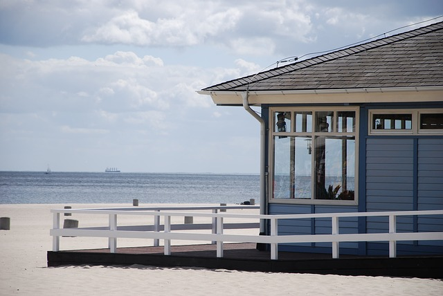

Lodging

Taniti has a wide variety of lodging that ranges from an inexpensive hostel to one large,
four star resort. There are many small, family owned hotels and a growing number of bed
and breakfasts. All types of lodging are strictly regulated and regularly inspected by
the Tanitian govenrment.
Transportation
Public busses serve Taniti City and run from 5 a.m to 11 p.m. everyday. Private buses
serve the rest of the island. Taxis are available in Taniti City, and rental cars can
be rented from a local rental agency near the airport. Bikes and helmets are available
to rent from several vendors (helmets are required by law). Taniti City is fairly flat
and very walkable. Many tourists stay in the area surrounding Merriton Landing: this
area is easy to explore on foot.
Grocery Stores
Taniti has two supermarkets, two smaller grocery stores, and one convenience store
that is open 24 hours a day.